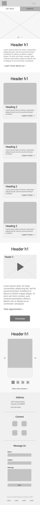
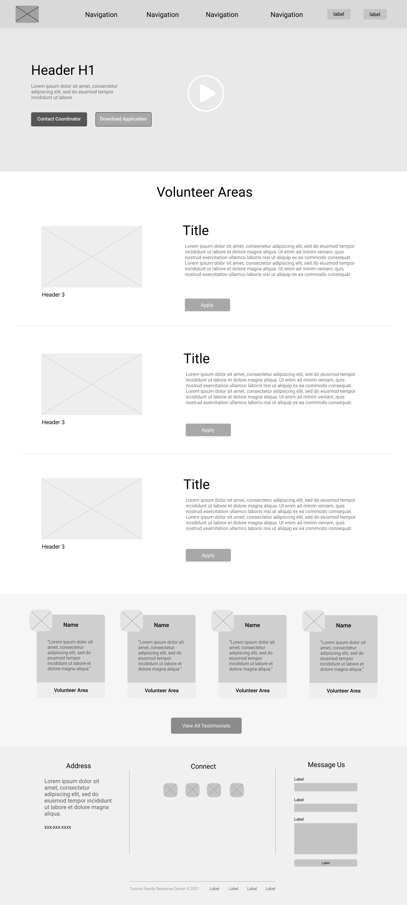
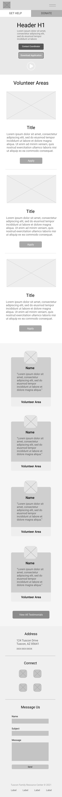

Wireframes
To demonstrate a responsive website, I first included the homepage of the desktop version with its accompanying responsive version. Second, I included the volunteer page with its accompanying responsive screen. I placed labels where users can easily find them and navigate to register as a volunteer.



